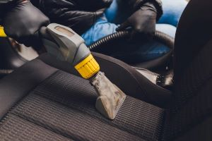

Extracting
Extracing is one of the most skill required detailing services that are available. The importance of extracting is the saftey and cleanliness that it brings the customer. Out of all of the extra services available at most detailing shops, extracting has been included because it truly takes years of embedded dirt, spilt drinks, and other accidents out of the fabric and carpet in a vehicles interior.
One of the most common uses for an extraction is mold removal. Although you can remove the surface layer of mold just by wiping it with a cleaner, however if mold is just wiped off then your problem with mold will grow back. The only true way or removing and killing mold is to use a steamer on hard plastic surfaces and an extractor on carpets and other fabrics. Although these services are typically an upcharge at most detail shops.
However this is not the only use for extractions. Extractions do great at removing any stain with a little help from an All-Purpose Cleaner along with a little agitation. Extracting your seats and carpets can remove years of sweat, dirt, spilt drinks, sauce, and various other stains which a normal wipedown or clean would not be able to remove.